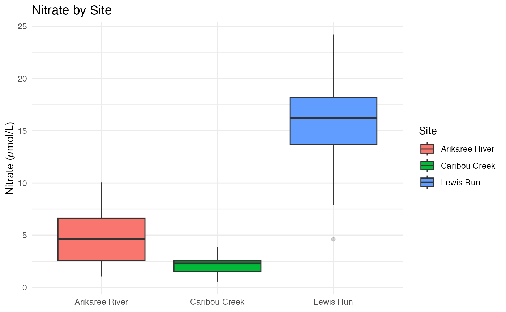

rainbow
rainbow.Rmd
library(rainbow)The rivers_data dataset
The dataset rivers_data contains measurements from three
synthetic stream sites: Arikaree River, Caribou
Creek, and Lewis Run. For each sampling event,
the data record:
-
Site – which stream the sample comes from
-
Nitrate – nitrate concentration in µmol/L
-
Temperature – water temperature in °C
-
Dissolved oxygen – in mg/L
-
Conductance – electrical conductance in µS/cm
-
Turbidity – a measure of water clarity (FNU)
- Elevation – site elevation in metres
Although the data are synthetic, they are based on patterns seen in real studies and are intended for exploring basic data-visualisation and app development ideas.
DESCRIBING THE FUNCTION
The my_first_plot() function
The main example function in the package is
my_first_plot().
It:
- Uses the
rivers_datadataset shipped with the package
- Produces a
ggplot2boxplot of nitrate concentration by site
- Applies a clean minimal theme so the focus stays on the data
Because my_first_plot() returns a ggplot
object, it can be further customised by users in their own analysis, for
example by changing the labels, colours, or theme.
This package contains one small synthetic dataset, rivers_data, and one demo plotting function, my_first_plot(). The dataset records nitrate concentration and common water-quality covariates at three stream sites. The plot function shows a boxplot of nitrate by site. A simple Shiny app is included to interactively filter sites and view a summary.
Exploring the rivers_data dataset
#We can take a quick look at the structure of the dataset.
str(rivers_data)
#> 'data.frame': 105 obs. of 7 variables:
#> $ Site : Factor w/ 3 levels "Arikaree River",..: 1 1 1 1 1 1 1 1 1 1 ...
#> $ Temperature : num 13.37 20.06 12.57 9.16 11.64 ...
#> $ DissolvedOxygen: num 6.29 7.58 9.5 7.23 8.62 ...
#> $ Conductance : num 608 480 459 509 550 ...
#> $ Turbidity : num 2.38 6.45 8.66 4.83 4.78 ...
#> $ Elevation : num 1126 1106 1078 1134 1125 ...
#> $ Nitrate : num 4.65 4.14 7.56 5.02 1.77 ...Exploring the rivers_data dataset
print(rainbow::my_first_plot())
HOW TO USE THE PACKAGE
A typical workflow with rainbow might be:
- Load the package with
library(rainbow).
- Read the help pages for
rivers_dataandmy_first_plot()to understand the variables and the example plot.
- Use
my_first_plot()to quickly visualise nitrate differences between the three sites.
- Open the Shiny app with
launch_app()to explore the data interactively and show results to others.